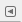

Главные окна GIMP

На иллюстрации выше представлено типовое расположение окон GIMP для эффективной работы.
-
1. Главная панель инструментов содержит набор кнопок с пиктограммами для выбора инструментов. Также может содержать цвета переднего плана и фона; кисть, шаблон и градиент; пиктограмма активного изображения. Разные дополнительные элементы можно показать с помощью меню Правка → Параметры → Панель инструментов.
Панель инструментов — единственная часть интерфейса программы, которую нельзя продублировать или закрыть.
-
2. Параметры инструментов: снизу к панели инструментов прикреплён диалог «Параметры инструментов», который отображает параметры выбранного инструмента (в данном случае это «размазывание»).
-
3. Окно изображения: каждое изображение в GIMP отображается в отдельном окне. Вы можете одновременно открыть достаточно большое количество изображений: столько, сколько позволяют системные ресурсы. Можно запустить GIMP и без единого открытого изображения, но в этом толку от программы будет немного. Окно изображения содержит меню главных команд GIMP (Файл, Правка, Выделение, …), которое также можно вызвать нажатием в окне правой кнопки мышки.
-
4. Слои, Каналы, Контуры с открытым диалогом слоёв; заметьте, что «диалоги» при «прикреплении» становятся закладками. Этот диалог отображает структуру слоёв активного изображения и позволяет управлять ими. Конечно, некоторые простые операции можно выполнять и без него. Но даже не очень опытные пользователи считают необходимым постоянно иметь доступ к диалогу слоёв.
-
5. Кисти/Текстуры/Градиенты: Панель, расположенная под диалогом слоёв, показывает диалоги управления кистями, текстурами, и градиентами.
Это — минимальный набор окон. В GIMP используется более дюжины различных диалогов, которые можно открыть при необходимости. Опытные пользователи обычно держат открытыми панель инструментов (с параметрами инструментов) и диалог «Слои». Панель инструментов нужна для многих операций в GIMP. Фактически, если вы её закроете, GIMP завершит работу (предварительно запросив подтверждение действия). Диалог «Параметры инструментов», отображённый на снимке прикреплённым к панели инструментов, является отдельным диалоговым окном. Однако опытные пользователи обычно устанавливают его так, как показано на иллюстрации: очень трудно эффективно использовать инструменты, не зная, каким образом настроены их параметры. При работе с многослойным изображением диалог «Слои» необходим всегда. Однако для тех, чей уровень знаний ещё не превышает основного, это означает почти всегда. И конечно, само окно изображения, без которого нельзя редактировать изображение; если вы закрываете окно изображения до его сохранения, GIMP запросит подтверждение закрытия.
Замечание
Если расположение окон в GIMP утеряно, то его можно легко вернуть с помощью команды Окна → Недавние прикрепляющиеся диалоги.
Чтобы добавить, закрыть или отсоединить вкладку от панели, нажмите на кнопку с треугольником в верхнем правом углу диалога. Это откроет меню закладок. Выберите Добавить вкладку, Закрыть вкладку или Отсоединить вкладку.
В GIMP нет возможности разместить всё содержимое — панели и диалоги — в одном цельном окне. В общине GIMP было принято, что наличие многих независимых окон улучшает работу пользователя, и что невозможно обеспечить корректную работу одного окна во всех операционных системах, поддерживаемых GIMP.
Версия GIMP 2.0 позволяет соединять диалоги гибким способом. (Например, диалог «Слои» на снимке в действительности содержит четыре диалога — «Слои», «Каналы», «Контуры» и «История действий».)
Внимание! Пропавшая панель
Если вы закроете "Панель инструментов" и "Главное окно" ничего неординарного и отличающегося от других программ не произойдет. А вот при закрытии окна "Слои, Каналы, Контуры" на экране остаются другие, а это вовсе пропадает, даже при перезапуске GIMP.
Чтобы вернуть окно GIMP "Слои, Каналы, Контуры" зайдите в "Главном окне": Правка - Параметры. Перед вами появится такое окно:

Переходите в раздел "Поведение окон" и нажимаете на кнопку Восстановить исходную позицию окон.
При следующем перезапуске GIMP, все три панели будут на месте.